wordbank_demo <- read_csv("_datasets/wordbank_WS_demographics.csv")6 Categorische variabelen
In dit hoofdstuk richten we ons op het inzichtelijk maken van data van categorische variabelen. De beschrijvende statistiek van categorische data is betrekkelijk eenvoudig: we kunnen de voorkomens van de categorieën tellen of de proportie die een categorie inneemt zichtbaar maken. Deze informatie kunnen we vervolgens zichtbaar maken in een grafiek. Uitdagingen zitten hem in het ordenen van de data in een grafiek. Hier leer je meer over de werking van factoren en hoe je die kunt manipuleren. We gebruiken dit hoofdstuk ook meteen om meer inzicht te krijgen in het gebruik van kleuren in je met ggplot2 gemaakte grafieken.
codeboek
In deze cursus leer je werken met zo’n 100 veelgebruikte functies in R. Het is belangrijk om voor jezelf een goed overzicht te houden van deze functies. Werk hier actief aan door een eigen codeboek aan te maken. Voeg tijdens of na afloop van het bestuderen van dit hoofdstuk de codes toe aan jouw codeboek.
De data in dit hoofdstuk
We beginnen met het inlezen van de data die we dit hoofdstuk gaan analyseren. We hebben een dataset wordbank_WS_demographics.csv met daarin demografische gegevens over de kinderen voor wie een vragenlijst over hun woordenschat is ingevuld. Naast welke taal ze spreken gaat het dan bijvoorbeeld om het hoeveelste kind ze in het gezin zijn en wat het opleidingsniveau van hun ouder/verzorger is. We lezen deze dataset eerst in:
De belangrijkste informatie over de dataset maken we vervolgens zichtbaar met glimpse():
glimpse(wordbank_demo)Rows: 51,340
Columns: 22
$ downloaded <date> 2025-07-14, 2025-07-14, 2025-07-14, 2025-07-14, …
$ language <chr> "Cantonese", "Cantonese", "Cantonese", "Cantonese…
$ form <chr> "WS", "WS", "WS", "WS", "WS", "WS", "WS", "WS", "…
$ dataset_name <chr> "Tardif", "Tardif", "Tardif", "Tardif", "Tardif",…
$ child_id <dbl> 27998, 27999, 28000, 28001, 28002, 28003, 28004, …
$ age <dbl> 17, 29, 16, 16, 16, 16, 16, 16, 16, 16, 17, 17, 1…
$ comprehension <dbl> 19, 600, 27, 29, 8, 4, 7, 36, 3, 74, 113, 61, 25,…
$ production <dbl> 19, 600, 27, 29, 8, 4, 7, 36, 3, 74, 113, 61, 25,…
$ is_norming <lgl> TRUE, TRUE, TRUE, TRUE, TRUE, TRUE, TRUE, TRUE, T…
$ birth_order <chr> NA, NA, NA, NA, NA, NA, NA, NA, NA, NA, NA, NA, N…
$ caregiver_education <chr> NA, NA, NA, NA, NA, NA, NA, NA, NA, NA, NA, NA, N…
$ ethnicity <chr> NA, NA, NA, NA, NA, NA, NA, NA, NA, NA, NA, NA, N…
$ race <chr> NA, NA, NA, NA, NA, NA, NA, NA, NA, NA, NA, NA, N…
$ sex <chr> "Male", "Female", "Male", "Male", "Male", "Female…
$ birth_weight <lgl> NA, NA, NA, NA, NA, NA, NA, NA, NA, NA, NA, NA, N…
$ born_early_or_late <lgl> NA, NA, NA, NA, NA, NA, NA, NA, NA, NA, NA, NA, N…
$ gestational_age <lgl> NA, NA, NA, NA, NA, NA, NA, NA, NA, NA, NA, NA, N…
$ zygosity <lgl> NA, NA, NA, NA, NA, NA, NA, NA, NA, NA, NA, NA, N…
$ language_exposures <chr> NA, NA, NA, NA, NA, NA, NA, NA, NA, NA, NA, NA, N…
$ health_conditions <lgl> NA, NA, NA, NA, NA, NA, NA, NA, NA, NA, NA, NA, N…
$ monolingual <lgl> TRUE, TRUE, TRUE, TRUE, TRUE, TRUE, TRUE, TRUE, T…
$ typically_developing <lgl> TRUE, TRUE, TRUE, TRUE, TRUE, TRUE, TRUE, TRUE, T…De dataset heeft meer dan 50.000 observaties en telt 22 variabelen. Het overzicht laat ook meteen zien dat we voor veel variabelen missing datapunten hebben. Om het allemaal wat handzamer te maken, perken we de dataset in. We gaan alleen kijken naar de Europese Romaanse talen Frans, Italiaans, Portugees en Spaans en daarbij richten we ons op de variabelen language (welke taal het kind leert), age (leeftijd in maanden), birth_order (hoeveelste kind in het gezin), sex (geslacht van het kind) en caregiver_education (het opleidingsniveau van de ouder/verzorger). We zetten ook meteen alle variabelen die als type character hebben om naar een factor:
wordbank_demo_romance <- wordbank_demo %>%
select(language, age, birth_order, sex, caregiver_education) %>%
filter(language %in% c("French (French)", " Italian", "Portuguese (European)", "Spanish (European)")) %>%
mutate(across(where(is.character), as.factor))Laten we nu eens tellen hoe vaak elke taal voorkomt in onze dataset:
wordbank_demo_romance %>%
count(language)# A tibble: 3 × 2
language n
<fct> <int>
1 French (French) 1233
2 Portuguese (European) 3012
3 Spanish (European) 593Wat opvalt is dat het Italiaans niet in de dataset voor lijkt te komen. Als we echter de oorspronkelijke dataset bekijken dan blijken er wel degelijk observaties voor het Italiaans te zijn (752 in totaal):
wordbank_demo %>%
filter(language == "Italian") %>%
nrow()[1] 752Wat is hier fout gegaan? Als we de eerder gebruikte code goed bekijken dan zien we dat we een typefout hebben gemaakt. Er stond een extra spatie voor Italian " Italian". Zoals we weten, neemt R alles letterlijk en aangezien er geen talen met de naam Italian bestaan krijgen we geen resultaten. Een extra herinnering dat we precies moeten blijven werken.
We herstellen dit snel en krijgen nu wel de goede tellingen:
wordbank_demo_romance <- wordbank_demo %>%
select(language, age, birth_order, sex, caregiver_education) %>%
filter(language %in% c("French (French)", "Italian", "Portuguese (European)", "Spanish (European)")) %>%
mutate(across(where(is.character), as.factor))wordbank_demo_romance %>%
count(language)# A tibble: 4 × 2
language n
<fct> <int>
1 French (French) 1233
2 Italian 752
3 Portuguese (European) 3012
4 Spanish (European) 593Zoals gezegd bieden categorische variabelen niet veel opties qua beschrijvende statistiek. We kunnen de tellingen nog omzetten in proporties (en eventueel percentages). Dit doen we door voort te bouwen op onze datatabel met tellingen. Met de functie sum() kunnen we getallen bij elkaar optellen. In dit geval doen we dat met alle getallen in de kolom n. Dit levert ons het totaal aantal talen op. Wanneer we de variabele n nu delen door dit totaal dan krijgen we de proportie die elke taal inneemt in onze dataset. We zien in de output dat R met één commando n/sum(n) voor elke waarde van n de bijbehorende proportie geeft. We hoeven dit dus niet voor elke taal apart te doen. We ronden de proporties tot slot af op twee decimalen met round().
counts_romance <- wordbank_demo_romance %>%
count(language) %>%
mutate(proportion = n/sum(n),
proportion = round(proportion, 2))
counts_romance# A tibble: 4 × 3
language n proportion
<fct> <int> <dbl>
1 French (French) 1233 0.22
2 Italian 752 0.13
3 Portuguese (European) 3012 0.54
4 Spanish (European) 593 0.116.1 Eigenaardigheden van barplots
De beschrijvende statistieken van categorische variabelen worden traditioneel zichtbaar gemaakt met staafdiagrammen, hoewel we hier ook punten zouden kunnen gebruiken. In ggplot gebruiken we hiervoor het geom geom_bar() of geom_col(). Als je de tellingen door R wilt laten uitvoeren tijdens het maken van de grafiek kies je voor geom_bar().
wordbank_demo_romance %>%
ggplot(aes(x = language)) +
geom_bar(fill = "wheat") +
theme_minimal(13)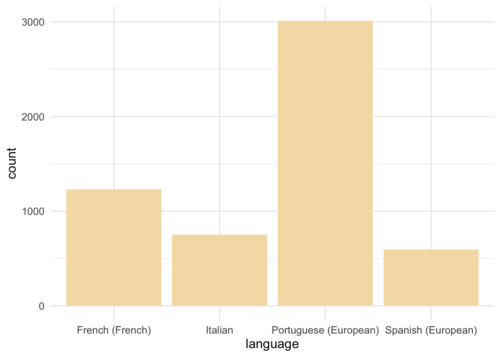
We hebben hier alleen een variabele meegegeven voor op de x-as, geom_bar berekent achter de schermen zelf de aantallen per categorie voor op de y-as. De standaard is hier stat(count) en deze default zien we terug in de naam van de y-as. Dat geom_bar() puur het aantal voorkomens in de dataset telt, zien we duidelijk als we onze datatabel waarin we zelf de aantallen hebben berekend als input meegeven. We krijgen dan iets dat op het eerste gezicht mogelijk onverwacht is:
counts_romance %>%
ggplot(aes(x = language)) +
geom_bar(fill = "wheat") +
theme_minimal(13)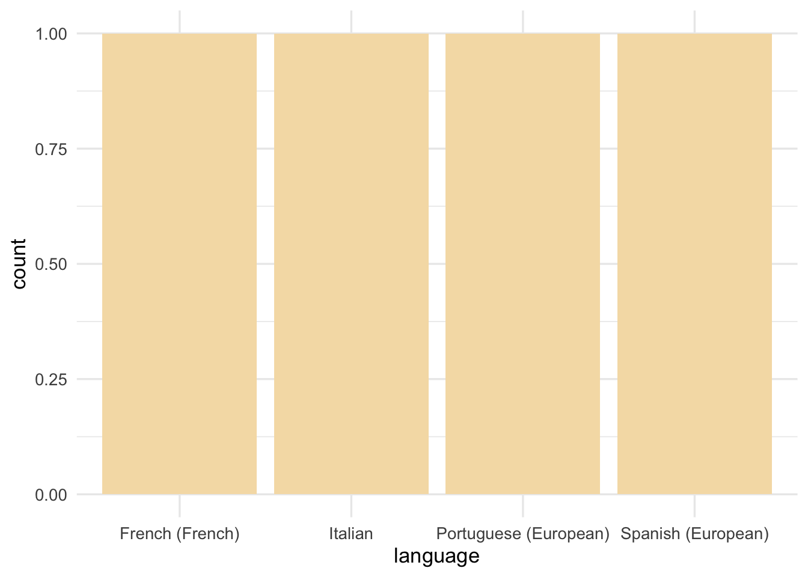
Dit staafdiagram laat zien dat elke taal één keer voorkomt in de dataset. Dit klopt inderdaad, want de datatabel telt voor elke taal één regel. Er zijn twee opties om onze eigen telling te laten zien (i) de statistiek van geom_bar() veranderen, (ii) het geom geom_col() gebruiken.
Zoals gezegd rekent geom_bar() standaard met de statistiek count. Deze statistiek kun je veranderen in het geom door stat = te specificeren als identity. Het geom gaat nu niet meer zelf tellen, maar gebruikt de waarden uit de variabele n in onze eigen telling. We moeten dan wel bij de aesthetics mapping van ggplot aangeven dat we deze variabele n willen afbeelden op de y-as:
counts_romance %>%
ggplot(aes(x = language, y = n)) +
geom_bar(stat = "identity", fill = "wheat") +
theme_minimal(13)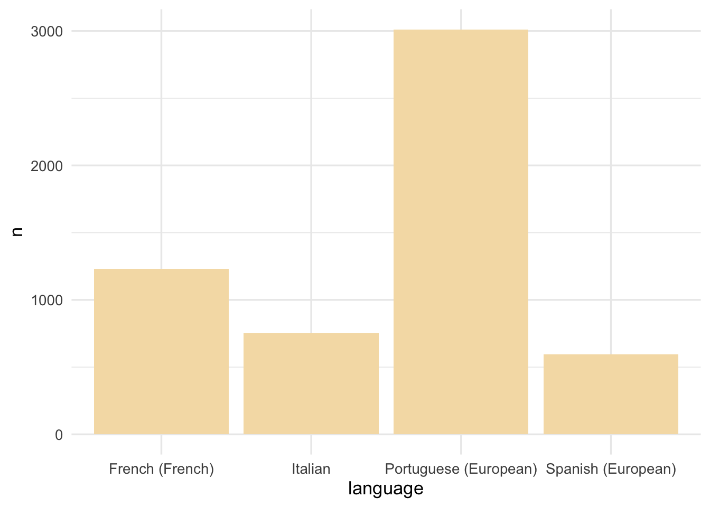
Het tweede alternatief geom_col() is eigenlijk een afkorting voor geom_bar(stat = "identity"). Om dit geom te gebruiken moet je dus altijd eerst zelf de tellingen uitvoeren. Die geef je mee als variabele. Dit geom neemt dus altijd twee variabelen als argument onder aes(). Het geom geom_col() geeft je volledige controle over welke getallen worden afgebeeld. Je moet ze alleen wel eerst zelf berekenen. We zien dat dit geom precies dezelfde grafiek oplevert. We hebben alleen de kleur aangepast om de twee varianten uit elkaar te houden.
wordbank_demo_romance %>%
count(language) %>%
ggplot(aes(x = language, y = n)) +
geom_col(fill = "peachpuff2") +
theme_minimal(13)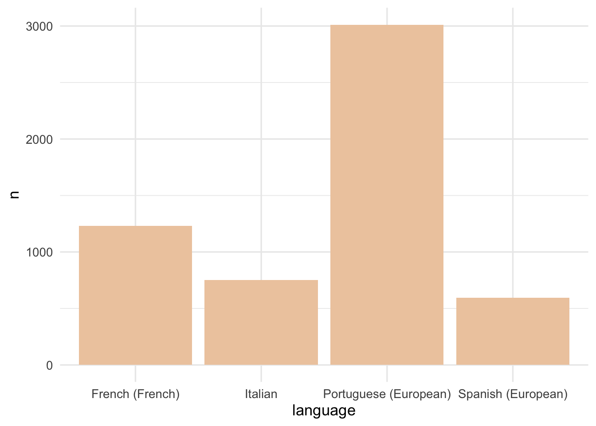
Aangezien je geom_col() zelf de getallen die je wilt afbeelden moet meegeven is het ook meteen te gebruiken voor proporties. We veranderen hiervoor alleen de mapping van de y-variabele naar y = proportion in de aes() van ggplot():
counts_romance %>%
ggplot(aes(x = language, y = proportion)) +
geom_col(fill = "peachpuff2") +
theme_minimal(13)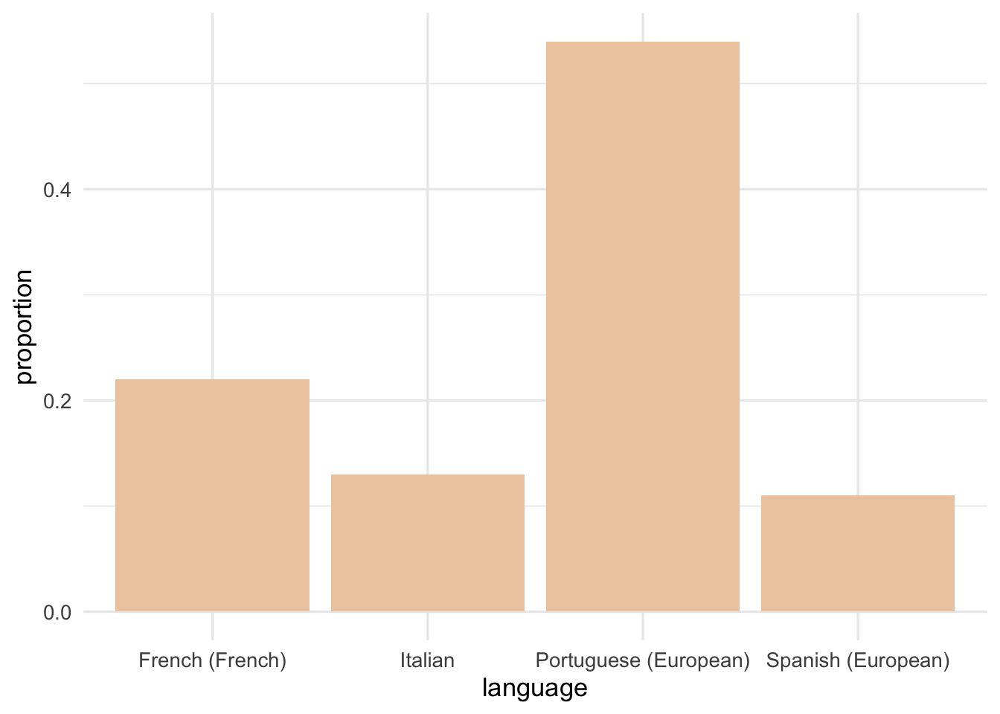
6.2 Herordenen van levels
In al onze grafieken zijn de talen op de x-as in alfabetische volgorde afgebeeld. Dit komt omdat R bij het aanmaken van een factor met as.factor() de levels van de factor alfabetisch ordent. De grafiek volgt dus precies de informatie in de factor. Dit is alleen niet wat we altijd willen. Wanneer er geen logische volgorde in een factor zit (wat bijvoorbeeld wel zo is als het om een geordende factor (of ordinale variabele) gaat, zie Paragraaf 6.2.1) is alfabetisch niet altijd de handigste optie om inzicht in de data te krijgen. Zeker wanneer er veel factorlevels zijn, kan dit ervoor zorgen dat de grafiek nogal chaotisch oogt. Om dit te verbeteren kunnen we de levels ordenen op basis van hun waarde (aantal keer dat het level voorkomt of de proportie). In andere woorden we ordenen van groot naar klein (of van klein naar groot). Om dit voor elkaar te krijgen moeten we de levels anders ordenen. Het heeft dus geen zin de data in volgorde van groot naar klein te zetten. Als we dat namelijk doen, dan krijgen we nog steeds dezelfde grafiek:
counts_romance %>%
arrange(n)# A tibble: 4 × 3
language n proportion
<fct> <int> <dbl>
1 Spanish (European) 593 0.11
2 Italian 752 0.13
3 French (French) 1233 0.22
4 Portuguese (European) 3012 0.54counts_romance %>%
arrange(n) %>%
ggplot(aes(x = language, y = proportion)) +
geom_col(fill = "peachpuff2") +
theme_minimal(13)Het package forcats dat onderdeel is van tidyverse en dus meteen wordt geladen als je library(tidyverse) aanroept (je hoeft het dus niet apart aan te roepen) heeft een groot aantal functies waarmee je factoren kunt manipuleren. Deze functies beginnen allemaal met fct_. Zo ordent de functie fct_infreq de levels op basis van het aantal voorkomens in de ruwe data met het level dat het meest voorkomt eerst. Om deze ordening zichtbaar te maken moeten we deze toepassen binnen een mutate(). Let op: in onderstaande code veranderen we de ordening niet in de oorspronkelijke datatabel wordbank_demo_romance, maar alleen in de tabel die door middel van pipes naar de functie ggplot() wordt gestuurd. Willen we het blijvend veranderen dan moeten we de mutate-stap toewijzen aan de datatabel met <- en vervolgens deze datatabel naar ggplot() sturen.
wordbank_demo_romance %>%
mutate(language = fct_infreq(language)) %>%
ggplot(aes(x = language)) +
geom_bar(fill = "wheat") +
theme_minimal(13)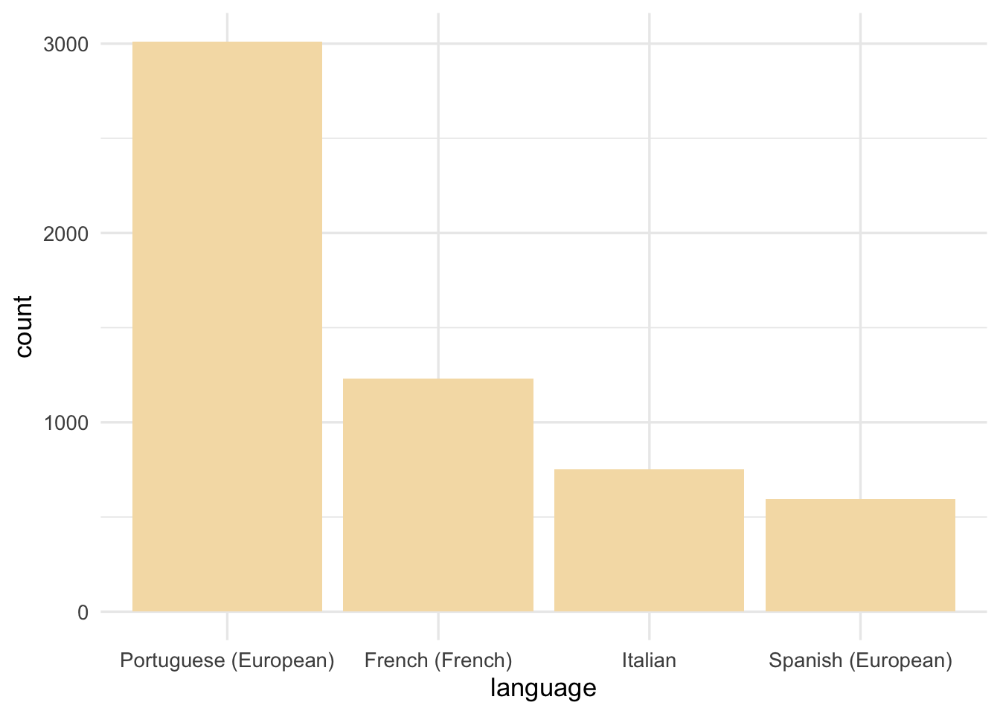
Wil je de volgorde omdraaien naar van klein naar groot dan kun je fct_rev() gebruiken. We passen deze hier in een keer toe samen met fct_infreq() door de pipe te gebruiken binnen mutate().
wordbank_demo_romance %>%
mutate(language = language %>% fct_infreq() %>% fct_rev()) %>%
ggplot(aes(x = language)) +
geom_bar(fill = "wheat") +
theme_minimal(13)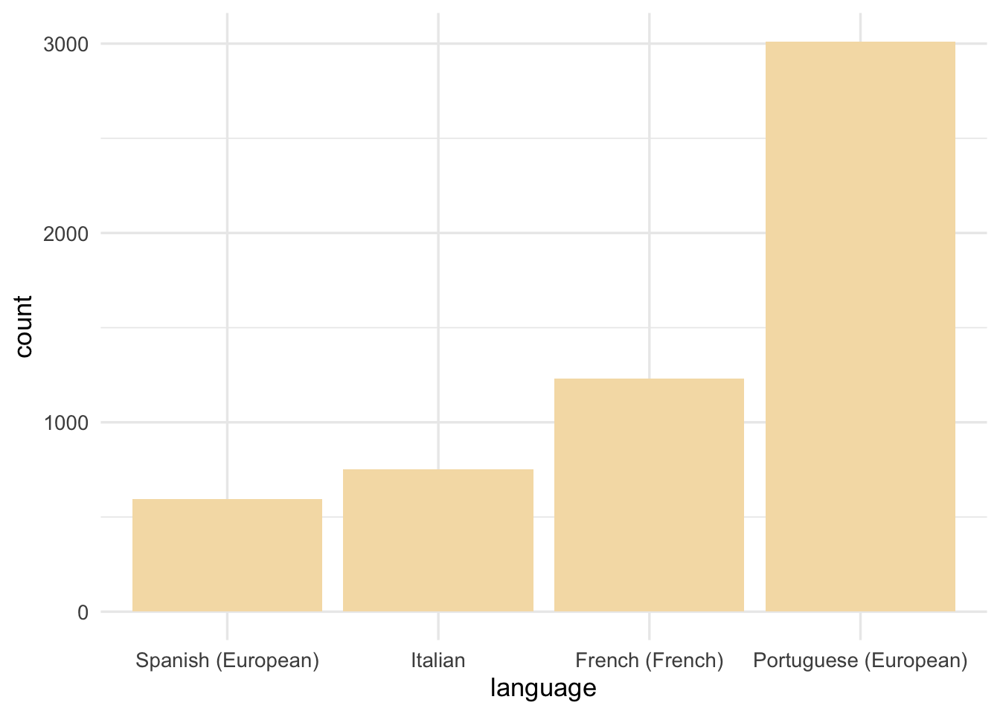
Er is ook de functie fct_reorder() die deze twee stappen in een keer kan uitvoeren. Deze functie neemt twee argumenten: (i) de variabele waarvan je de levels wilt aanpassen en (ii) de variabele op basis waarvan je de levels wilt ordenen (hier n).
wordbank_demo_romance %>%
count(language) %>%
mutate(language = fct_reorder(language, n)) %>%
ggplot(aes(x = language, y = n)) +
geom_col(fill = "peachpuff2") +
theme_minimal(13)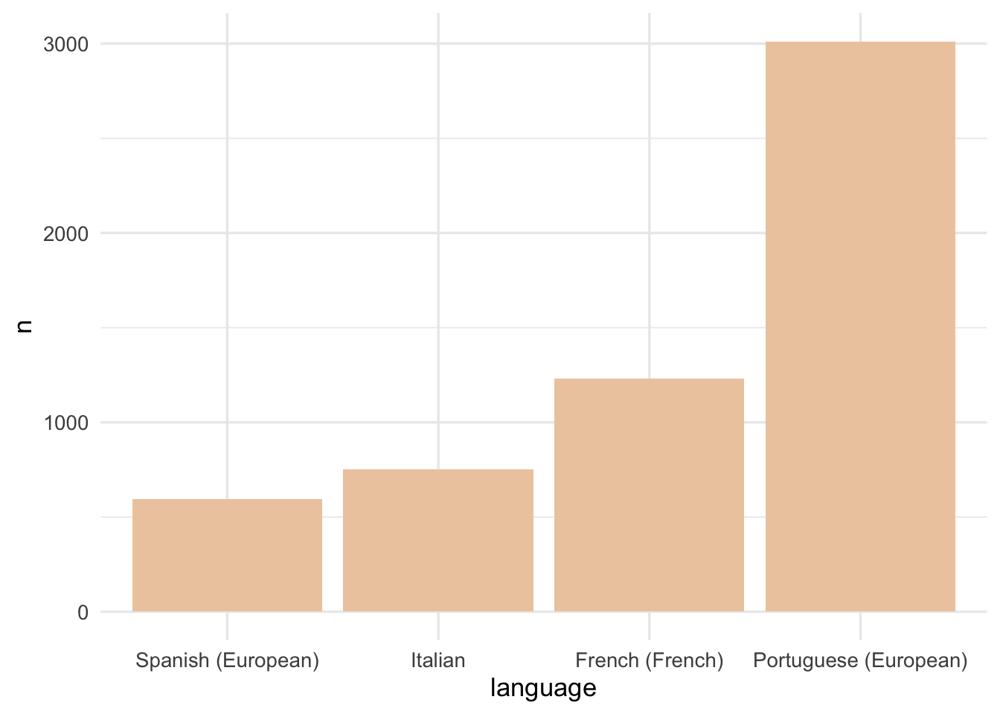
fct_reorder().Ook in dit geval kunnen we het eerste argument (language) buiten de functie zetten met een pipe (in regel 3). Door de mapping van x en y om te wisselen (regel 4) maken we er meteen een liggend staafdiagram van. Deze optie maakt het vaak makkelijker om verschillen te zien, zeker als die niet erg groot zijn.
wordbank_demo_romance %>%
count(language) %>%
mutate(language = language %>% fct_reorder(n)) %>%
ggplot(aes(x = n, y = language)) +
geom_col(fill = "peachpuff2") +
theme_minimal(13)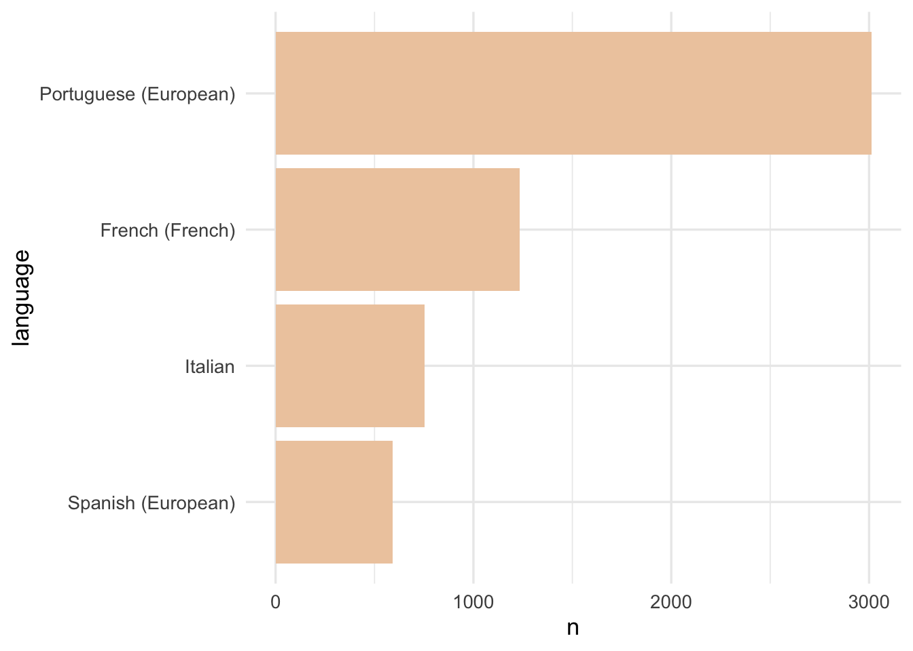
Het draaien van de grafiek kan ook met de functie coord_flip(). Deze is alleen te gebruiken als je niet al een andere coord_-functie toepast in je grafiek. Wanneer je dat wel doet, zul je de variabelen moeten verwisselen in aes().
wordbank_demo_romance %>%
count(language) %>%
mutate(language = fct_reorder(language, n)) %>%
ggplot(aes(x = language, y = n)) +
geom_col(fill = "peachpuff2") +
coord_flip() +
theme_minimal(13)6.2.1 Een geordende factor
Bij geordende factoren kun je niet vrijelijk de levels herordenen, omdat de ordening hier een betekenis heeft. Laten we dit eens bekijken aan de hand van de variabele birth_order. Zoals de naam als zegt gaat het hier om een geordende factor. De variabele geeft namelijk de volgorde van geboorte in het gezin aan. We maken een eerste staafdiagram van deze variabele:
wordbank_demo_romance %>%
ggplot(aes(x = birth_order)) +
geom_bar(fill = "olivedrab4") +
theme_minimal(13)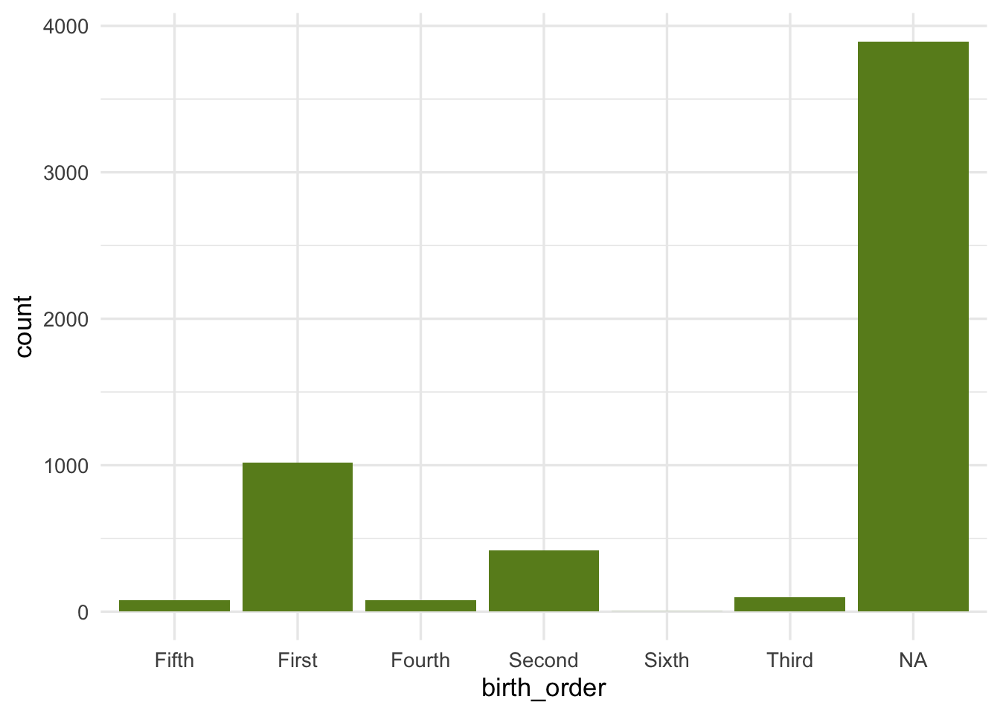
De hoge staaf bij NA geeft aan dat deze informatie voor veel kinderen in de dataset niet geregistreerd is. Daarnaast valt vooral op dat de levels alfabetisch zijn geordend met ‘Fifth’ als eerste en niet First. Dit weerspiegelt de manier waarop R de ordening van de levels heeft geregistreerd:
levels(wordbank_demo_romance$birth_order)[1] "Fifth" "First" "Fourth" "Second" "Sixth" "Third" Dit gaan we aanpassen. Om onze code overzichtelijk te houden, maken we eerst een vector aan met de juiste ordening:
birth_order_levels <- c("First", "Second", "Third", "Fourth", "Fifth", "Sixth")Met fct_relevel() kunnen we deze ordening nu toepassen op de variabele birth_order. Nadat de ordening is toegepast sturen we de datatabel naar ggplot(). Zie het resultaat in Figuur 6.2.
wordbank_demo_romance %>%
filter(!is.na(birth_order)) %>%
mutate(birth_order = birth_order %>% fct_relevel(birth_order_levels)) %>%
ggplot(aes(x = birth_order)) +
geom_bar(fill = "olivedrab4") +
labs(x = "birth order") +
theme_minimal(13)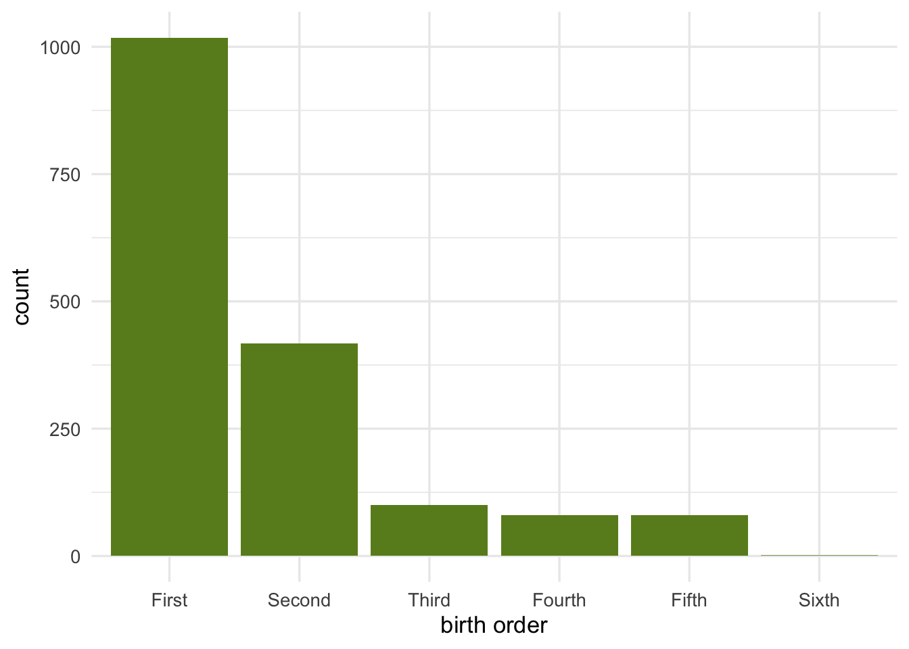
6.3 Levels hernoemen of samenvoegen
Soms wil je meer dan alleen de bestaand levels herordenen. Stel dat je onze eerdere grafiek Figuur 6.1 wilt opnemen in een Nederlandstalig verslag. Je zult dan Nederlandse namen voor assen en levels willen gebruiken. Onze dataset bevat alleen Engelse namen. Het aanpassen van de namen van de assen kunnen we in ggplot() doen binnen labs() zoals we al eerder hebben gedaan. Het staat ons hier vrij om een naam te kiezen, dus dat kan ook een Nederlandse naam zijn. De namen van de levels van een variabele zullen we moeten hernoemen. Hiervoor gebruiken we fct_recode(), die we eerder al hebben gezien toen we namen aan numerieke levels toekenden (zie Paragraaf 3.2.2). We gebruiken fct_recode() in onderstaande code om elke taal een Nederlandse naam te geven. Let op dat de nieuwe levelnaam voor = komt zonder aanhalingstekens en de oude naam erachter met aanhalingstekens.
wordbank_demo_romance %>%
count(language) %>%
mutate(language = fct_reorder(language, n),
language = language %>% fct_recode(
Frans = "French (French)",
Italiaans = "Italian",
Portugees = "Portuguese (European)",
Spaans = "Spanish (European)"
)) %>%
ggplot(aes(x = language, y = n)) +
geom_col(fill = "wheat") +
labs(x = "taal",
y = "aantal kinderen in dataset") +
theme_minimal(13)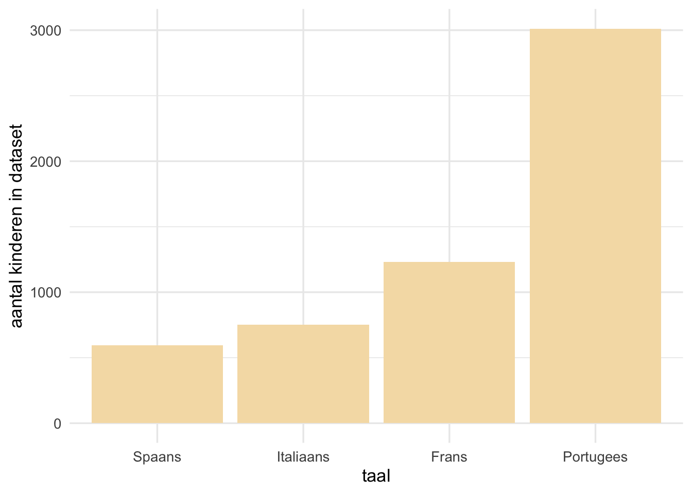
Soms wil je het aantal levels reduceren bijvoorbeeld om je grafiek overzichtelijker te maken of omdat bepaalde levels weinig voorkomen in de data. Met fct_collapse() kun je meerdere levels samenvoegen tot een nieuw level (soms is fct_other() handiger, want minder typewerk). In onderstaand voorbeeld voegen we de levels Fourth, Fifth en Sixth samen tot een nieuw level Fourth or later dat we hier met spaties schrijven, omdat dat mooier staat in de grafiek. Om te zorgen dat R het als één variabele herkent, zetten we enkele aanhalingstekens (backticks) om deze nieuwe naam heen (dus: `Fourth or later`). De levels die we willen samenvoegen geven we mee als argumenten aan de functie c().
wordbank_demo_romance %>%
filter(!is.na(birth_order)) %>%
mutate(birth_order = birth_order %>% fct_relevel(birth_order_levels),
birth_order = birth_order %>% fct_collapse(`Fourth or later` = c("Fourth", "Fifth", "Sixth"))) %>%
ggplot(aes(x = birth_order)) +
geom_bar(fill = "olivedrab4") +
labs(x = "birth order") +
theme_minimal(13)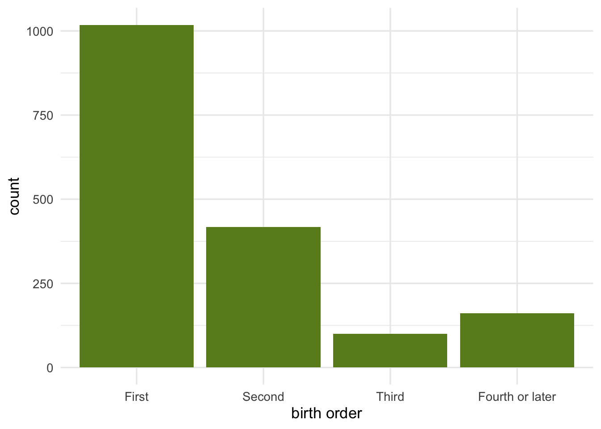
6.4 Meerdere categorische variabelen
We hebben ons tot nu toe gericht op grafieken met een enkele categorische variabele. De variabele geslacht is hier een voorbeeld van:
wordbank_demo_romance %>%
count(sex)# A tibble: 3 × 2
sex n
<fct> <int>
1 Female 2655
2 Male 2785
3 <NA> 150Vaak willen we beschrijvende statistieken geven van meerdere categorische variabelen tegelijk. In onze dataset kunnen we bijvoorbeeld de verdeling van geslacht per taal bekijken. We halen wel eerst de missing values eruit met !is.na().
wordbank_demo_romance %>%
filter(!is.na(sex)) %>%
count(language, sex)# A tibble: 8 × 3
language sex n
<fct> <fct> <int>
1 French (French) Female 558
2 French (French) Male 525
3 Italian Female 377
4 Italian Male 375
5 Portuguese (European) Female 1424
6 Portuguese (European) Male 1588
7 Spanish (European) Female 296
8 Spanish (European) Male 297Omdat we twee levels hebben van de variabele sex en vier van de variabele language krijgen we \(2 \times 4\) getallen terug. De volgorde waarin we de variabelen meegeven aan count() bepaalt de volgorde waarin R de data teruggeeft aan ons. Wanneer we eerst sex meegeven, dan worden de data geordend per level van die variabele, dus eerst alle waarden voor het eerste level female en dan voor het tweede level. Binnen elk level van sex worden de levels van language steeds getoond in de levelvolgorde van die variabele met French (French) als eerste.
wordbank_demo_romance %>%
filter(!is.na(sex)) %>%
count(sex, language)# A tibble: 8 × 3
sex language n
<fct> <fct> <int>
1 Female French (French) 558
2 Female Italian 377
3 Female Portuguese (European) 1424
4 Female Spanish (European) 296
5 Male French (French) 525
6 Male Italian 375
7 Male Portuguese (European) 1588
8 Male Spanish (European) 297De uitdaging ontstaat wanneer we proporties gaan berekenen. We moeten ons dan steeds de vraag stellen: proporties van wat? We hebben hier namelijk verschillende mogelijkheden en het aantal mogelijkheden wordt groter met het toenemen van het aantal variabelen. We kunnen bijvoorbeeld van elke combinatie van taal en geslacht de proportie binnen de dataset als geheel berekenen. Hiervoor bepalen we eerst het totaal aantal observaties (regel 4) en gebruiken dat als deler voor n.
wordbank_demo_romance %>%
filter(!is.na(sex)) %>%
count(language, sex) %>%
mutate(sum_total = sum(n),
proportion_total = n/sum_total,
proportion_total = round(proportion_total, 2))# A tibble: 8 × 5
language sex n sum_total proportion_total
<fct> <fct> <int> <int> <dbl>
1 French (French) Female 558 5440 0.1
2 French (French) Male 525 5440 0.1
3 Italian Female 377 5440 0.07
4 Italian Male 375 5440 0.07
5 Portuguese (European) Female 1424 5440 0.26
6 Portuguese (European) Male 1588 5440 0.29
7 Spanish (European) Female 296 5440 0.05
8 Spanish (European) Male 297 5440 0.05De kolom proportion_total laat zien dat binnen elke taal de proportie per geslacht ongeveer een gelijk aandeel van het geheel heeft.
We kunnen de proporties ook per taal berekenen, dus bijvoorbeeld welk aandeel heeft het level female binnen het Frans? Hiervoor moeten we de totalen per taal berekenen. Dit doen we met de functie group-by(). Deze functie biedt de mogelijkheid om een volgende functie uit te voeren per level van een (of meerdere) variabele(n).
wordbank_demo_romance %>%
filter(!is.na(sex)) %>%
count(language, sex) %>%
mutate(sum_total = sum(n),
proportion_total = n/sum_total,
proportion_total = round(proportion_total, 2)) %>%
group_by(language) %>%
mutate(sum_language = sum(n))# A tibble: 8 × 6
# Groups: language [4]
language sex n sum_total proportion_total sum_language
<fct> <fct> <int> <int> <dbl> <int>
1 French (French) Female 558 5440 0.1 1083
2 French (French) Male 525 5440 0.1 1083
3 Italian Female 377 5440 0.07 752
4 Italian Male 375 5440 0.07 752
5 Portuguese (European) Female 1424 5440 0.26 3012
6 Portuguese (European) Male 1588 5440 0.29 3012
7 Spanish (European) Female 296 5440 0.05 593
8 Spanish (European) Male 297 5440 0.05 593We gebruiken die totalen per taal om vervolgens het aantal observaties erdoor te delen:
wordbank_demo_romance %>%
filter(!is.na(sex)) %>%
count(language, sex) %>%
mutate(sum_total = sum(n),
proportion_total = n/sum_total,
proportion_total = round(proportion_total, 2)) %>%
group_by(language) %>%
mutate(sum_language = sum(n),
proportion_language = n/sum_language,
proportion_language = round(proportion_language, 2))| language | sex | n | sum_total | proportion_total | sum_language | proportion_language |
|---|---|---|---|---|---|---|
| French (French) | Female | 558 | 5440 | 0.10 | 1083 | 0.52 |
| French (French) | Male | 525 | 5440 | 0.10 | 1083 | 0.48 |
| Italian | Female | 377 | 5440 | 0.07 | 752 | 0.50 |
| Italian | Male | 375 | 5440 | 0.07 | 752 | 0.50 |
| Portuguese (European) | Female | 1424 | 5440 | 0.26 | 3012 | 0.47 |
| Portuguese (European) | Male | 1588 | 5440 | 0.29 | 3012 | 0.53 |
| Spanish (European) | Female | 296 | 5440 | 0.05 | 593 | 0.50 |
| Spanish (European) | Male | 297 | 5440 | 0.05 | 593 | 0.50 |
We zien hier dat binnen elke taal de proporties voor zowel female als male rond de .50 ligt.
De laatste optie is per geslacht te berekenen welke proportie elke taal inneemt. Hiervoor berekenen we eerst het totaal aantal observaties per geslacht met group_by(sex).
demo_romance <- wordbank_demo_romance %>%
filter(!is.na(sex)) %>%
count(language, sex) %>%
mutate(sum_total = sum(n),
proportion_total = n/sum_total,
proportion_total = round(proportion_total, 2)) %>%
group_by(language) %>%
mutate(sum_language = sum(n),
proportion_language = n/sum_language,
proportion_language = round(proportion_language, 2)) %>%
group_by(sex) %>%
mutate(sum_sex = sum(n),
proportion_sex = n/sum_sex,
proportion_sex = round(proportion_sex, 2))
demo_romance| language | sex | n | sum_total | proportion_total | sum_language | proportion_language | sum_sex | proportion_sex |
|---|---|---|---|---|---|---|---|---|
| French (French) | Female | 558 | 5440 | 0.10 | 1083 | 0.52 | 2655 | 0.21 |
| French (French) | Male | 525 | 5440 | 0.10 | 1083 | 0.48 | 2785 | 0.19 |
| Italian | Female | 377 | 5440 | 0.07 | 752 | 0.50 | 2655 | 0.14 |
| Italian | Male | 375 | 5440 | 0.07 | 752 | 0.50 | 2785 | 0.13 |
| Portuguese (European) | Female | 1424 | 5440 | 0.26 | 3012 | 0.47 | 2655 | 0.54 |
| Portuguese (European) | Male | 1588 | 5440 | 0.29 | 3012 | 0.53 | 2785 | 0.57 |
| Spanish (European) | Female | 296 | 5440 | 0.05 | 593 | 0.50 | 2655 | 0.11 |
| Spanish (European) | Male | 297 | 5440 | 0.05 | 593 | 0.50 | 2785 | 0.11 |
Dit voorbeeld laat zien dat je zelf als onderzoeker goed moet nadenken wat je wilt laten zien. Elke proportie vertelt een net wat ander verhaal.
Hoewel het mogelijk is om de proporties te laten bereken door geom_bar() levert dit al snel complicaties op. Wij kiezen er daarom voor om zelf proporties te berekenen en deze af te beelden met geom_col(). Op deze manier houd je volledige controle over de data.
Laten we eerst eens kijken of we de proportie geslacht per taal kunnen afbeelden.
demo_romance %>%
ggplot(aes(x = language, y = proportion_language)) +
geom_col() +
labs(y = "proportion per language") +
theme_minimal(13)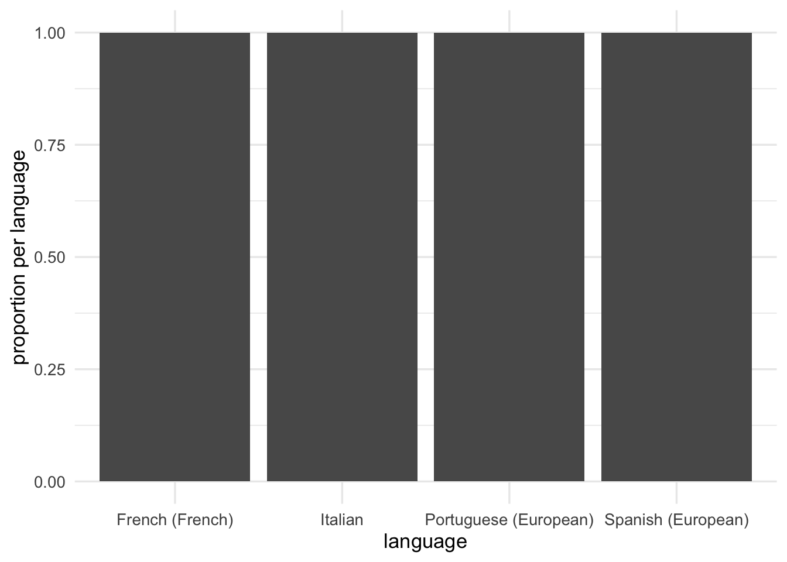
Deze grafiek geeft nog weinig inzicht. We zullen hiervoor de staven moet kleuren op basis van de variabele sex. We voegen deze toe in de aes() van ggplot(), waar we een mapping maken met fill (N.B. color verandert de rand van de staaf niet de binnenkant.)
demo_romance %>%
ggplot(aes(x = language, y = proportion_language, fill = sex )) +
geom_col() +
labs(y = "proportion per language") +
theme_minimal(13)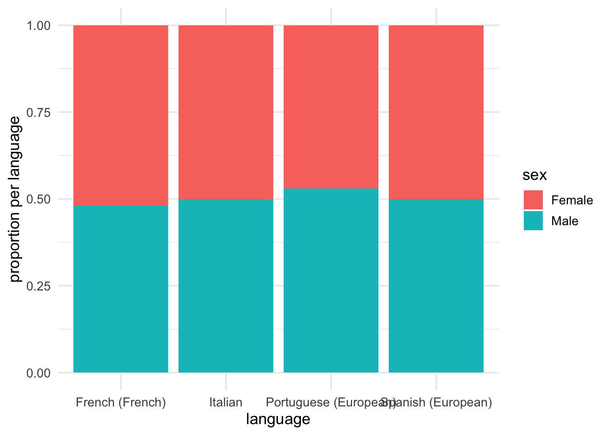
Dit laat meteen een probleem zien dat ontstaat door factoren met lange namen van levels. Door het toevoegen van kleur is er een legenda bij gekomen en hierdoor is er minder ruimte voor de staven. De namen van de levels overlappen. Dit probleem geeft ons de mogelijkheid om wat meer opties van ggplot() te laten zien. Er zijn namelijk meerdere manieren om dit op te lossen. We kunnen de grafiek draaien of we kunnen de positie van de legenda veranderen. Dit laatste doen we binnen de functie theme() met de optie legend.position. We verplaatsen de legenda naar de onderkant van de grafiek (andere opties zijn left, right, top en none die we al eerder hebben gezien om de legenda geheel te verwijderen).
demo_romance %>%
ggplot(aes(x = language, y = proportion_language, fill = sex )) +
geom_col(width = 0.5) +
labs(y = "proportion per language") +
theme_minimal(13) +
theme(legend.position = "bottom")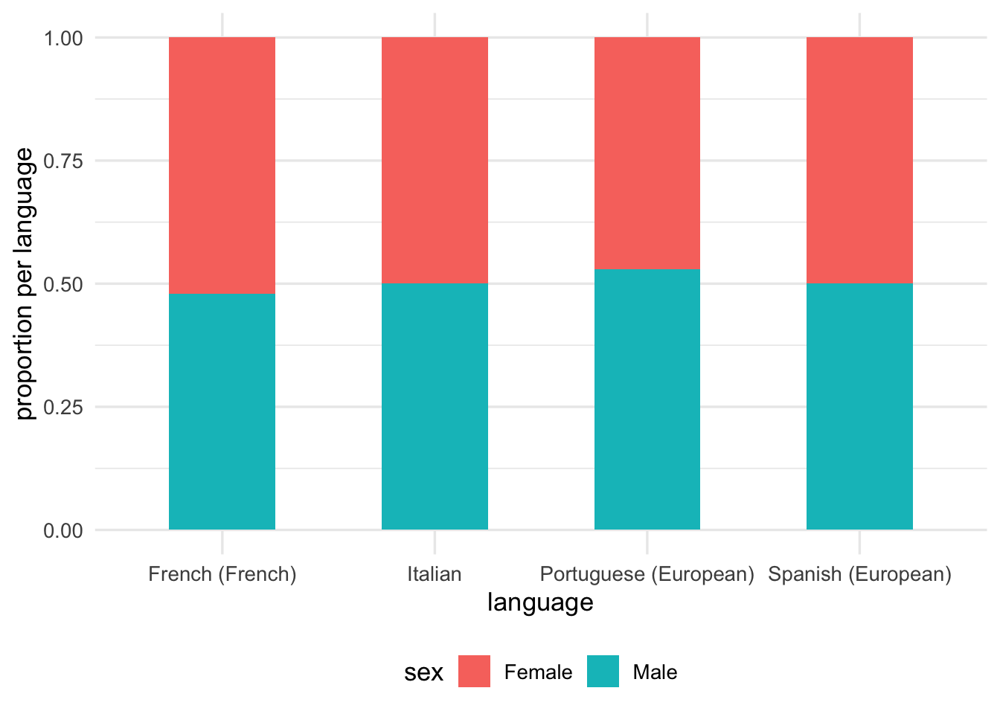
We kunnen er ook voor kiezen om de labels van de x-as wat de draaien. Ook dit specificeren we binnen theme(). Er zijn talloze opties om hierbinnen het uiterlijk van de grafiek aan te passen, gebruik ?theme() voor een overzicht. Hier passen we een rotatie van 45 graden (angle = 45) toe op de text van de x-as axis.text.x en we verplaatsen de tekst ook wat in de hoogte en de breedte met vjust en hjust.
demo_romance %>%
ggplot(aes(x = language, y = proportion_language, fill = sex )) +
geom_col(width = 0.5) +
labs(y = "proportion per language") +
theme_minimal(13) +
theme(axis.text.x = element_text(angle = 45, vjust = 1, hjust = 1))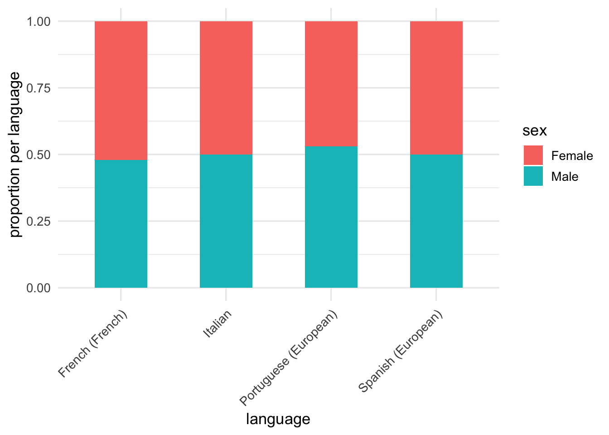
Wanneer we de proporties voor meer dan twee levels willen laten zien dan geeft een gestapeld staafdiagram niet altijd de beste optie. Het kan dan namelijk lastig worden om over staven heen gelijke levels te vergelijken, omdat die een ander beginpunt hebben.
demo_romance %>%
ggplot(aes(x = sex, y = proportion_sex, fill = language )) +
geom_col(width = 0.5) +
labs(y = "proportion per language") +
theme_minimal(13) 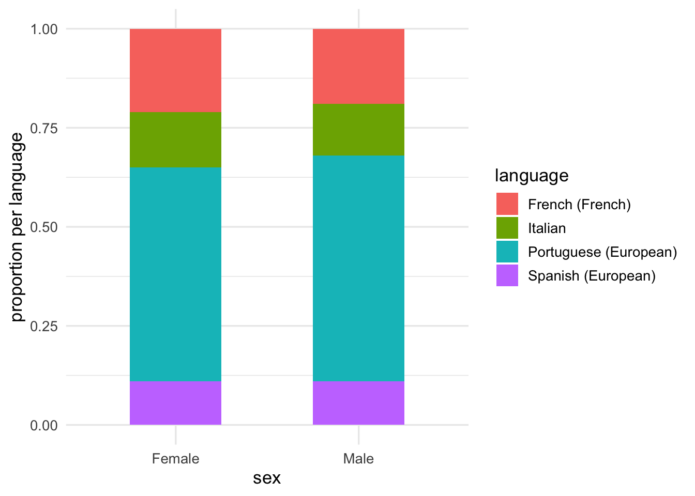
We kunnen er in dat geval voor kiezen om de elk level een eigen staaf te geven. Dat doen we binnen geom_col() door het argument position = "dodge" toe te voegen.
demo_romance %>%
ggplot(aes(x = sex, y = proportion_sex, fill = language )) +
geom_col(position = "dodge", width = 0.5) +
labs(y = "proportion per language") +
theme_minimal(13) Dit is een verkorte schrijfwijze voor position = position_dodge() dat je kunt gebruiken om de afstand tussen de staven aan te passen:
demo_romance %>%
ggplot(aes(x = sex, y = proportion_sex, fill = language )) +
geom_col(position = position_dodge(.6), width = 0.5) +
labs(y = "proportion per language") +
theme_minimal(13) 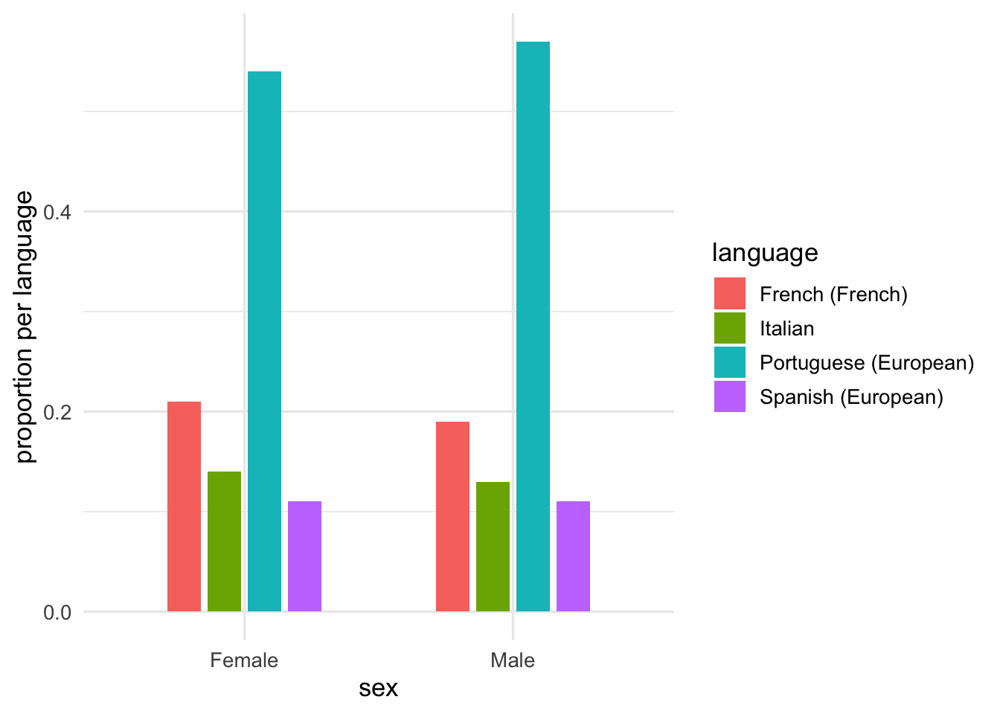
6.5 Kleuren
We hebben net kleuren gebruikt om de verschillende levels van een variabele binnen een andere variabele zichtbaar te maken. Dit biedt ons een mooie gelegenheid om wat dieper in te gaan op kleurgebruik binnen R. Het blijkt dat dit vaak een leuk onderdeel wordt gevonden van het maken van grafieken. Ook hier zijn de mogelijkheden eindeloos.
Wanneer we een variabele via aes() afbeelden op een aesthetic waarin kleur een rol speelt (color of fill), dan zal R in principe zelf de kleuren bepalen die gebruikt worden, zoals te zien in Figuur 6.3. Je kunt deze kleuren echter ook handmatig aanpassen. Met het commando colors() krijg je een overzicht van alle in R gedefinieerde kleurennamen, voor een visueel overzicht zie https://sites.stat.columbia.edu/tzheng/files/Rcolor.pdf. Je kunt deze kleurennamen gebruiken wanneer je een vaste kleur wilt geven aan alle staven of punten in je grafiek. Dit hebben we aan het begin van het hoofdstuk steeds gedaan. In dit geval wijs je deze kleur toe binnen het geom buiten aes() met color = "<kleurnaam>", zie bijvoorbeeld Figuur 6.1 waar we peachpuff2 als kleurnaam hebben toegepast. Wanneer je een variabele naar een kleurattribuut mapt binnen aes() en je wilt de kleuren handmatig aanpassen dan moet je scale_fill_manual() toevoegen bij een mapping naar fill of scale_color_manual() bij een mapping naar color. Je geeeft dan met de functie c() aan het argument values evenveel kleurennamen mee als dat er levels zijn die je wilt kleuren. De kleuren worden in volgorde gekoppeld aan de levels van de factor. Hieronder hebben we dat gedaan voor Figuur 6.3. Dit resulteert in Figuur 6.4.
demo_romance %>%
ggplot(aes(x = sex, y = proportion_sex, fill = language )) +
geom_col(position = position_dodge(.6), width = 0.5) +
scale_fill_manual(values = c("violetred1", "violetred2", "violetred3", "violetred4")) +
labs(y = "proportion per language") +
theme_minimal(13) 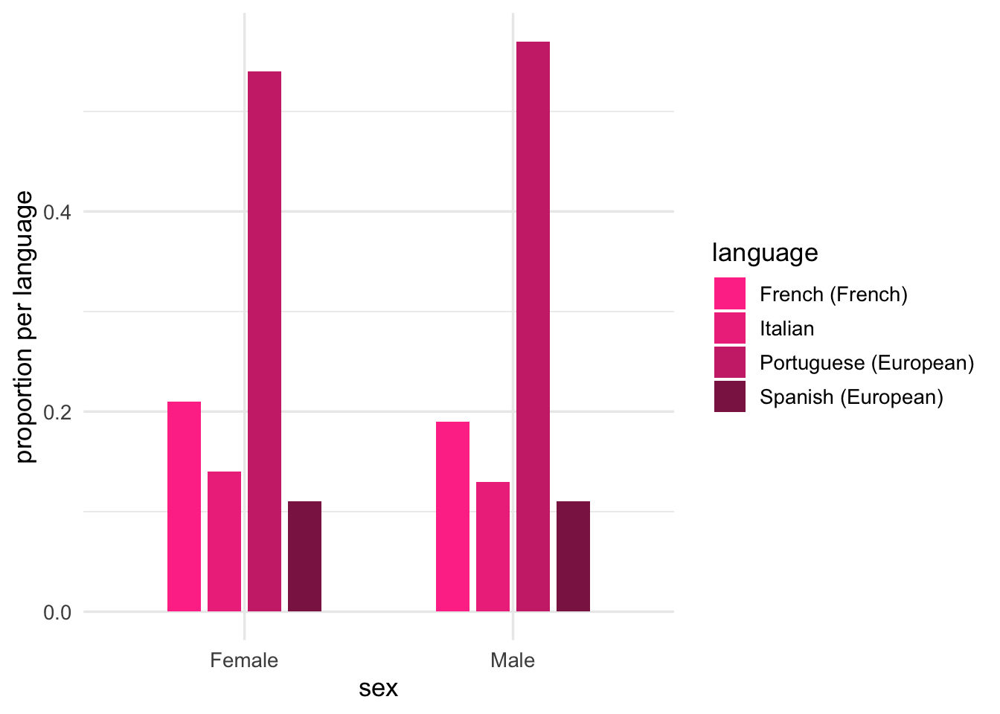
Wanneer je zelf kleuren gaat kiezen is het belangrijk om te zorgen dat de levels voldoende contrast hebben. In bovenstaand voorbeeld is dat niet heel erg duidelijk gelukt. Om je hierbij te helpen, bestaan er paletten van kleuren met voldoende contrast, op deze website vind je een overzicht. Deze paletten voeg je toe met scale_fill_brewer(palette = "<palettenaam>") (of scale_color_brewer()). Hieronder gebruiken we het palette PuRd. Verder is het ook raadzaam om rekening te houden met kleurenblindheid. Hiervoor bestaan speciale paletten.
demo_romance %>%
ggplot(aes(x = sex, y = proportion_sex, fill = language )) +
geom_col(position = position_dodge(.6), width = 0.5) +
scale_fill_brewer(palette = "PuRd") +
labs(y = "proportion per language") +
theme_minimal(13) 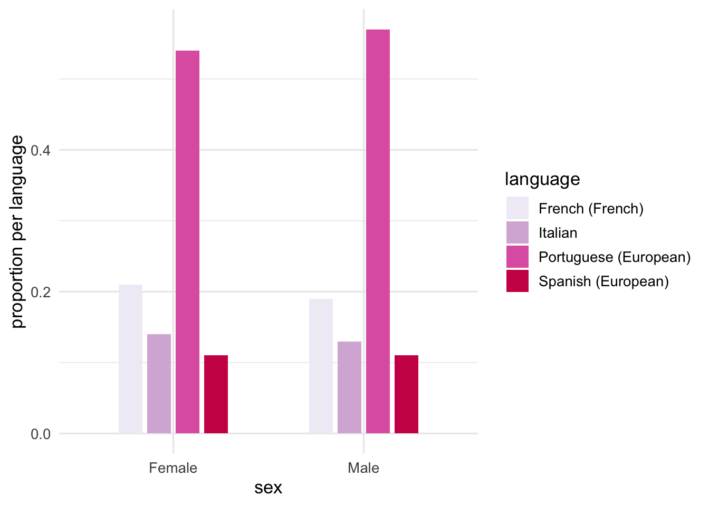
6.6 Een level highlighten
Onze kennis over kleuren kunnen we toepassen om een level van een variabele te highlighten. Stel je voor dat je een verslag schrijft waarin je speciale aandacht hebt voor het Italiaans. Je zou er dan voor kunnen kiezen om dit level van de variabele language een andere kleur te geven dan de overige levels. Op deze manier springt het Italiaans er echt uit in je grafiek.
Aangezien we te maken hebben met een mapping van een variabele naar kleur, kun je een nieuwe variabele aanmaken. We geven deze variabele hier de naam lang_color. Binnen deze variabele geven we Italian een andere waarde dan de overige levels. We doen dat met de functie fct_other(). Binnen deze functie kun je aangeven van welk(e) level(s) je de naam wilt bewaren met het argument keep en welke je een andere naam wilt geven. Deze levels krijgen standaard de naam Other, maar je kunt er ook voor kiezen dit een andere naam te geven.
wordbank_demo_romance %>%
count(language) %>%
mutate(language = fct_reorder(language, n),
lang_color = language %>% fct_other(keep = c("Italian"))) # A tibble: 4 × 3
language n lang_color
<fct> <int> <fct>
1 French (French) 1233 Other
2 Italian 752 Italian
3 Portuguese (European) 3012 Other
4 Spanish (European) 593 Other We gebruiken deze nieuwe variabele lang_other vervolgens in de mapping van fill op het niveau van geom_col() (kan ook binnen ggplot()) en we voegen via scale_fill_manual() de kleuren toe die we willen gebruiken. Aangezien Italian voor Other komt, zal het Italiaans de rode kleur krijgen en de andere levels grijs.
wordbank_demo_romance %>%
count(language) %>%
mutate(language = fct_reorder(language, n),
lang_color = language %>% fct_other(keep = c("Italian"))) %>%
ggplot(aes(x = n, y = language)) +
geom_col(aes(fill = lang_color), show.legend = F) +
scale_fill_manual(values = c("red", "grey80")) +
theme_minimal(13)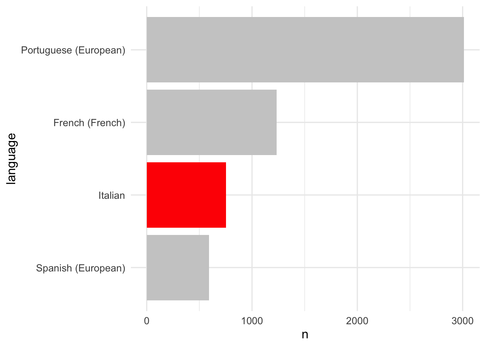
Verder leren
- Lees hoofdstuk 4 (t/m 4.5) en sectie 5.1 van Healy (2019) voor meer inzicht in de eigenaardigheden van barplots.
- hoofdstuk 9 uit Wickham et al. (2023) geeft een goed beeld van hoe geoms en facets werken in
ggplot2. - Hoofdstuk 16 uit R4DS geeft daarnaast een overzicht van het werken van factoren (zoals het veranderen van de ordening van levels).
- Zie voor een overzicht van wat je allemaal kunt doen met factoren het forcats cheat sheet.
- Alles over kleuren in R vind je op https://r-graph-gallery.com/ggplot2-color.html
- Het ggplot2 cheat sheet geeft een overzicht van de mogelijkheden die dit package biedt.
Healy, K. (2019). Data Visualisation: A Practical Introduction. Princeton University Press. https://socviz.co/
Wickham, H., Çetinkaya-Rundel, M., & Grolemund, G. (2023). R for Data Science (2de dr.). O’Reilly. https://r4ds.hadley.nz/
Nu zou je in staat moeten zijn Practicum 4 te maken.